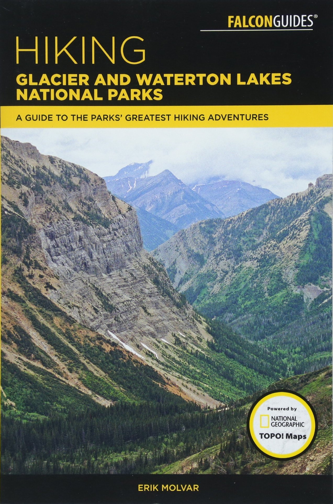

Regions
The North Fork
The Lake McDonald Area
The Highline and Waterton Valley
The Southern Sector
Two Medicine
The St. Mary Valley
Many Glacier
Waterton Lakes National Park
Home
About
Contact
Resources
Resources
The book below provided all of the information. This site is merely a summary of the spectacular informatin provided in this book.
